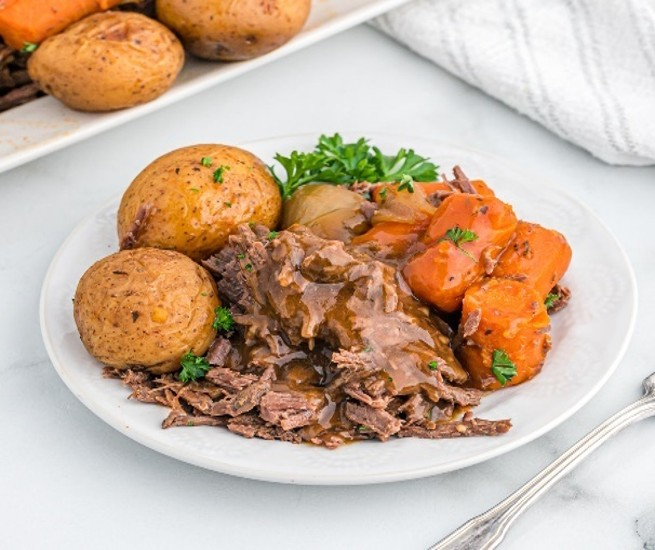

Featured Recipe
Smoked Tuna Dip
A creamy fresh-catch dip made with smoked tuna, jalapeños, dill pickles, shredded cheese, and an optional 12-hour brine for even more flavor.
View RecipeFrom the field and the water to the dinner table, these are some of my favorite outdoor recipes.
Whether you're cooking freshly caught fish or preparing wild game after a successful hunt, I hope these recipes help you enjoy the outdoors long after the hunt is over.
A creamy fresh-catch dip made with smoked tuna, jalapeños, dill pickles, shredded cheese, and an optional 12-hour brine for even more flavor.
View Recipe
A crispy Parmesan crust with tender, flaky catfish makes this one of my favorite easy fish dinners.
View Recipe
Turn wild goose into a tender, smoky meal with a flavorful dry brine and low-and-slow cooking.
View Recipe
A tender oven-roasted venison recipe with garlic, rosemary, thyme, and a simple savory pan sauce.
View Recipe
Cream cheese, cheddar, duck breast, and bacon wrapped in crispy bacon. A crowd-pleasing appetizer for hunting camp, game day, or backyard cookouts.
View Recipe
A light, fresh fish recipe featuring striped bass, ripe tomatoes, basil, and a simple savory sauce.
View Recipe